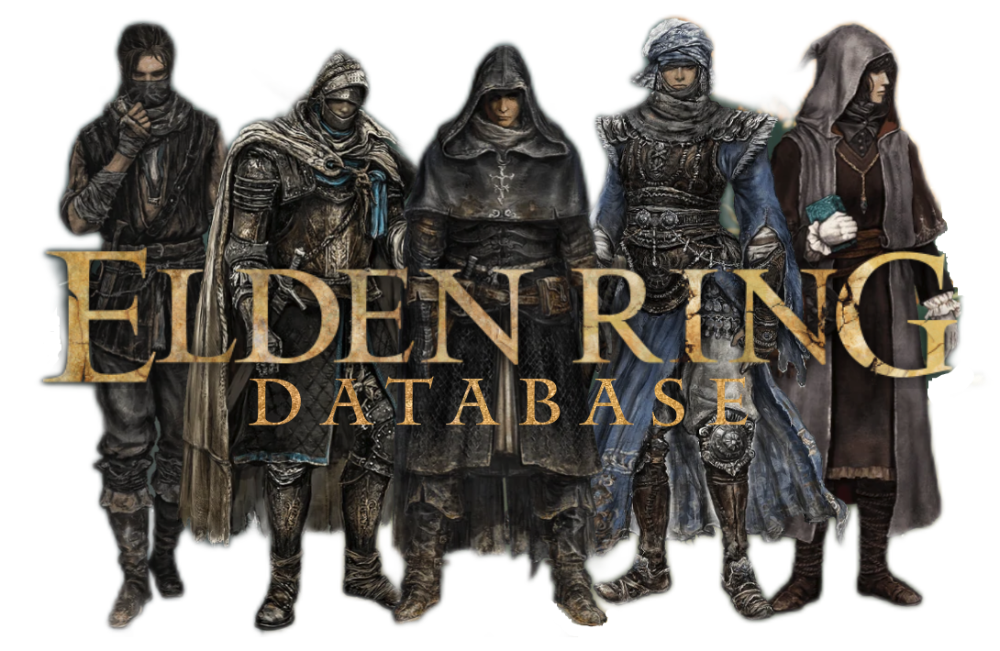

This is an ongoing project based off the game, Elden Ring. This website provides information about weapons, armors, items and bosses within the game. Elden Ring is an open-world action role-playing game that consists of a large amount of data. The main goal of our website is to make data more accessible to the user. This website doesn't currently display all the information from Elden Ring but it does does cover a large amount of it. I hope you enjoy as we continue to push more updates along the way!

Rise, Tarnished, and be guided by grace to brandish the power of the Elden Ring and become an Elden Lord in the Lands Between.
In the Lands Between ruled by Queen Marika the Eternal, the Elden Ring, the source of the Erdtree, has been shattered.
Marika's offspring, demigods all, claimed the shards of the Elden Ring known as the Great Runes, and the mad taint of their newfound strength triggered a war: The Shattering. A war that meant abandonment by the Greater Will.
And now the guidance of grace will be brought to the Tarnished who were spurned by the grace of gold and exiled from the Lands Between. Ye dead who yet live, your grace long lost, follow the path to the Lands Between beyond the foggy sea to stand before the Elden Ring.